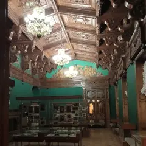
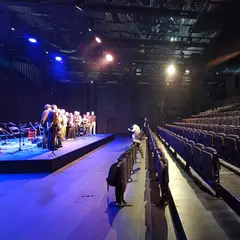
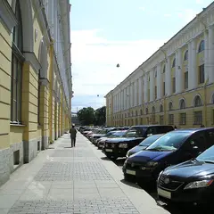

У метро · Центр
Куда сходить у метро «Гостиный двор»
Для 22 мест из нашего каталога ближайшая станция — «Гостиный двор» (Центр): 6 театров, 5 баров, 3 ресторана или кафе и 2 книжных. Например, «Александринский театр», «Музей Фаберже» и «Театр музыкальной комедии». Недорогих, примерно до 1 500 ₽ на человека, — 13. 13 готовых планов проходят через эту станцию — например, «Александринка и мартини с устрицами», с маршрутом пешком между точками.
- 22 места
- 13 планов
Места у метро «Гостиный двор» 22
площадь Островского, 6
Новое
Старейший драмтеатр России в здании Росси: классика в новой режиссуре и зал с ложами в золоте.
Подробнее и маршрут: Александринский театрПозвать сюда: Александринский театр
Фото: Bene Riobó, CC BY-SA 4.0 · Wikimedia Commons
наб. реки Фонтанки, 21
Новое
Императорские пасхальные яйца и ювелирка в Шуваловском дворце — красиво, нарядно и не слишком долго.
Подробнее и маршрут: Музей ФабержеПозвать сюда: Музей Фаберже
Фото: GAlexandrova, CC BY-SA 4.0 · Wikimedia Commons

Итальянская ул., 13
Новое
Мюзиклы и оперетта в нарядном зале на Итальянской — для тех, кто хочет музыки и шоу.
Подробнее и маршрут: Театр музыкальной комедииПозвать сюда: Театр музыкальной комедии
Фото: Книжная пыль, CC BY-SA 4.0 · Wikimedia Commons
наб. реки Фонтанки, 3
Новое
Старейший каменный цирк России: большие программы с акробатами и животными в историческом здании.
Подробнее и маршрут: Цирк на ФонтанкеПозвать сюда: Цирк на Фонтанке
Фото: Никонико962, CC BY-SA 4.0 · Wikimedia Commons

наб. реки Фонтанки, 49А
Новое
Медиацентр со спектаклями, лекциями, кино и крышей; площадка для экспериментального театра.
Подробнее и маршрут: Новая сцена Александринского театраПозвать сюда: Новая сцена Александринского театра
Фото: Анастасия Юрьевна Львова, CC BY-SA 4.0 · Wikimedia Commons

ул. Зодчего Росси
Новое
Улица идеальных пропорций за Александринским театром: одинаковые жёлто-белые фасады и редкая симметрия — эффектный кадр.
Подробнее и маршрут: Улица Зодчего РоссиПозвать сюда: Улица Зодчего Росси
Фото: Evgeny Zykin, CC BY 3.0 · Wikimedia Commons
наб. реки Фонтанки, 30
Новое
Свежая паста и бар на Фонтанке — лёгкий итальянский ужин вдвоём без лишней торжественности.
Подробнее и маршрут: Salone Pasta&BarПозвать сюда: Salone Pasta&Bar
Караванная ул., 8
Новое
Демократичное кафе с домашней кухней: хинкали, хачапури-фокачча, сытные салаты — под большую компанию.
Невский пр., 60
Новое
Старейший кинотеатр города с бархатным залом: премьеры, фестивали и показы авторского кино.
Подробнее и маршрут: Кинотеатр «Аврора»Позвать сюда: Кинотеатр «Аврора»
наб. реки Фонтанки, 11
Новое
Кафе у Фонтанки, куда ходят на сырники с утра и за необычными сезонными спешлами.
наб. реки Фонтанки, 15
Новое
Интеллектуальный книжный на Фонтанке: философия, искусство и редкий нон-фикшн, плюс лекции, кинопоказы и кофе среди полок.
Невский пр., 56
Новое
Комедии и лёгкие спектакли в доме Елисеевых на Невском — хороший вариант для первого похода в театр.
Подробнее и маршрут: Театр Комедии им. АкимоваПозвать сюда: Театр Комедии им. Акимова
наб. реки Фонтанки, 5/2
Новое
Мясной гастропаб у Фонтанки: стейки, бургеры, пиво и коктейли, а по выходным с утра подают завтраки.
наб. реки Фонтанки, 24
Новое
Галерея в старинном особняке: живопись XX века, ленинградское искусство и коллекционные выставки.
Итальянская ул., 17
Новое
Бельгийская брассерия в центре: мидии в разных соусах и большая карта бельгийского пива, по выходным до половины третьего.
Подробнее и маршрут: Kriek на ИтальянскойПозвать сюда: Kriek на Итальянской
Садовая ул., 13-15/50
Новое
Ирландский паб у Гостиного двора: несколько экранов с футболом, гиннесс и бургеры, по выходным до двух ночи.
Подробнее и маршрут: O'Hooligans на СадовойПозвать сюда: O'Hooligans на Садовой
ул. Ломоносова, 3
КруглосуточноНовое
Мартини-бар с устрицами: сухой мартини с оливкой здесь главный выбор, а по выходным вечер легко затягивается за полночь.
Итальянская ул., 33
Новое
Винный бар на Васильевском с доступными бокалами и простыми закусками; в пятницу и субботу открыт до двух ночи.
Караванная ул., 12
Новое
Киноклубный центр у Манежной площади: авторские фильмы, ретроспективы, обсуждения после сеансов.
Невский пр., 66
Новое
Книжный на Невском, открытый в 1934-м и не закрывавшийся даже в блокаду: классика, книги о Петербурге и старые издания.
Подробнее и маршрут: Книжная лавка писателейПозвать сюда: Книжная лавка писателей
Невский пр., 44
Новое
Спешелти-кофейня прямо на Невском: большое меню, каппинги и мастер-классы для тех, кто хочет научиться различать вкусы кофе.
Итальянская ул., 21
Новое
Исторический драмтеатр в Пассаже на Итальянской: классика и комедии в уютном зале.
Подробнее и маршрут: Театр им. КомиссаржевскойПозвать сюда: Театр им. Комиссаржевской


Готовые планы 12 из 13
- Александринский театр · Театр · м. Гостиный двор
- 5 минут пешкомOy! · Коктейльный бар
Классика в новой режиссуре и ложи в золоте старейшего драмтеатра, а потом 5 минут пешком — мартини-бар с устрицами.
Открыть план: Александринка и мартини с устрицамиПозвать сюда: Александринка и мартини с устрицами
Фото: Bene Riobó, CC BY-SA 4.0 · Wikimedia Commons
- Музей Анны Ахматовой в Фонтанном доме · Музей · м. Маяковская
- 6 минут пешкомSalone Pasta&Bar · Итальянский ресторан
Квартира Ахматовой во флигеле Фонтанного дома и тихий сад за ним, а потом 6 минут пешком вдоль Фонтанки — свежая паста без лишней торжественности.
Открыть план: Ахматова и паста на ФонтанкеПозвать сюда: Ахматова и паста на Фонтанке
Фото: MilanSPb, CC BY-SA 4.0 · Wikimedia Commons
- Театр музыкальной комедии · Театр · м. Гостиный двор
- 8 минут пешкомМама Тата · Кафе
Мюзикл или оперетта в нарядном зале Театра музыкальной комедии, а потом 8 минут пешком — хачапури и сытные салаты в «Маме Тате».
Открыть план: Мюзикл на Итальянской и домашняя кухняПозвать сюда: Мюзикл на Итальянской и домашняя кухня
Фото: Книжная пыль, CC BY-SA 4.0 · Wikimedia Commons
- Музей Фаберже · Музей · м. Гостиный двор
- 6 минут пешкомПалкинъ · Ресторан
Императорские пасхальные яйца в Шуваловском дворце, а через 6 минут пешком — парадные залы ресторана с дореволюционной историей на углу Невского.
Открыть план: Фаберже и «Палкинъ»Позвать сюда: Фаберже и «Палкинъ»
Фото: GAlexandrova, CC BY-SA 4.0 · Wikimedia Commons
- Цирк на Фонтанке · Цирк · м. Гостиный двор
- 2 минуты пешкомSalone Pasta&Bar · Итальянский ресторан
Акробаты под куполом старейшего каменного цирка России — смеяться и ахать вместе, а после пара минут пешком — свежая паста на Фонтанке.
Открыть план: Цирк на Фонтанке и пастаПозвать сюда: Цирк на Фонтанке и паста
Фото: Никонико962, CC BY-SA 4.0 · Wikimedia Commons
- Кинотеатр «Аврора» · Кинотеатр · м. Гостиный двор
- 2 минуты пешкомProstovino · Винный бар
Фильм в старейшем кинотеатре города, а через пара минут пешком — винный бар с доступными бокалами и простыми закусками.
Открыть план: Бархатный зал «Авроры» и бокал винаПозвать сюда: Бархатный зал «Авроры» и бокал вина
- Взаперти на Соляном · Квест · м. Чернышевская
- 15 минут пешкомBlackchops · Гастропаб
Киношные сюжеты на двух этажах квест-центра, а потом 15 минут пешком — стейки, бургеры и пиво в гастропабе у Фонтанки.
Открыть план: Квест у Чернышевской и мясной гастропабПозвать сюда: Квест у Чернышевской и мясной гастропаб
- Порядок слов · Книжный магазин · м. Гостиный двор
- 1 минута пешкомМечтатели · Кафе
Полистать философию и редкий нон-фикшн в «Порядке слов», а через пару минут пешком — сырники и сезонные спешлы в «Мечтателях».
Открыть план: Книжный на Фонтанке и сырникиПозвать сюда: Книжный на Фонтанке и сырники
- KGallery · Галерея · м. Гостиный двор
- 2 минуты пешкомSalone Pasta&Bar · Итальянский ресторан
Живопись XX века и ленинградское искусство в старинном особняке, а потом пара минут пешком — свежая паста на Фонтанке.
Открыть план: Особняк KGallery и пастаПозвать сюда: Особняк KGallery и паста
- Salone Pasta&Bar · Итальянский ресторан · м. Гостиный двор
- 3 минуты пешкомThe Hat · Джаз-бар
Лёгкий итальянский ужин на Фонтанке, а потом пара минут пешком — крошечный бар The Hat, где почти каждый вечер играют джаз. Места у музыкантов разбирают быстро.
Открыть план: Паста и живой джазПозвать сюда: Паста и живой джаз
- Театр Комедии им. Акимова · Театр · м. Гостиный двор
- 5 минут пешкомKriek на Итальянской · Пивной ресторан
Лёгкий спектакль в доме Елисеевых — хороший первый поход в театр вдвоём, — а потом 5 минут пешком — мидии и бельгийское пиво на Итальянской.
Открыть план: Театр Комедии и бельгийские мидииПозвать сюда: Театр Комедии и бельгийские мидии
- Мама Тата · Кафе · м. Гостиный двор
- 6 минут пешкомЧешская пивница · Пивной ресторан
Сытные хинкали на большую компанию, а потом 6 минут пешком — пражская пивная с разливным, рулькой и экраном с футболом.
Открыть план: Хинкали и чешское под матчПозвать сюда: Хинкали и чешское под матч

Как позвать
- Выбери план, место или событие — в карточке адрес, цены и маршрут в Яндекс Картах.
- Нажми «Позвать сюда» — соберётся приглашение-игра для свидания или голосование для компании.
- Отправь ссылку в любой мессенджер: тебе ответят, а компания отметит, куда и когда может. Бесплатно и без регистрации.